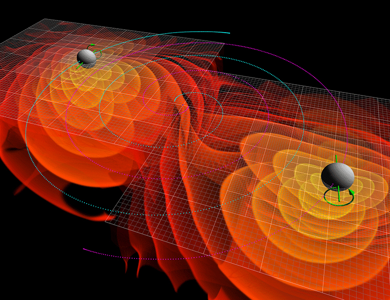
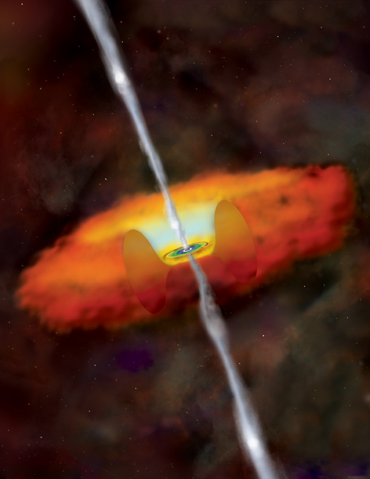
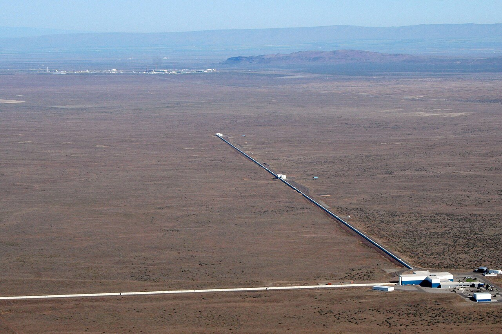
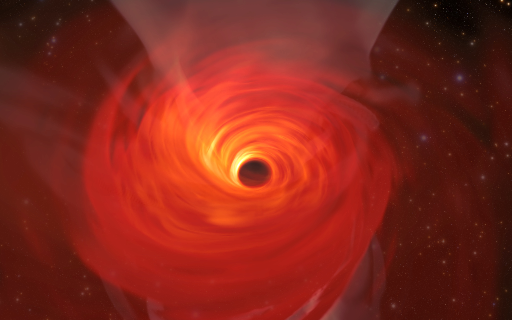
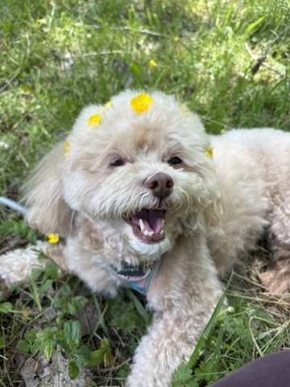
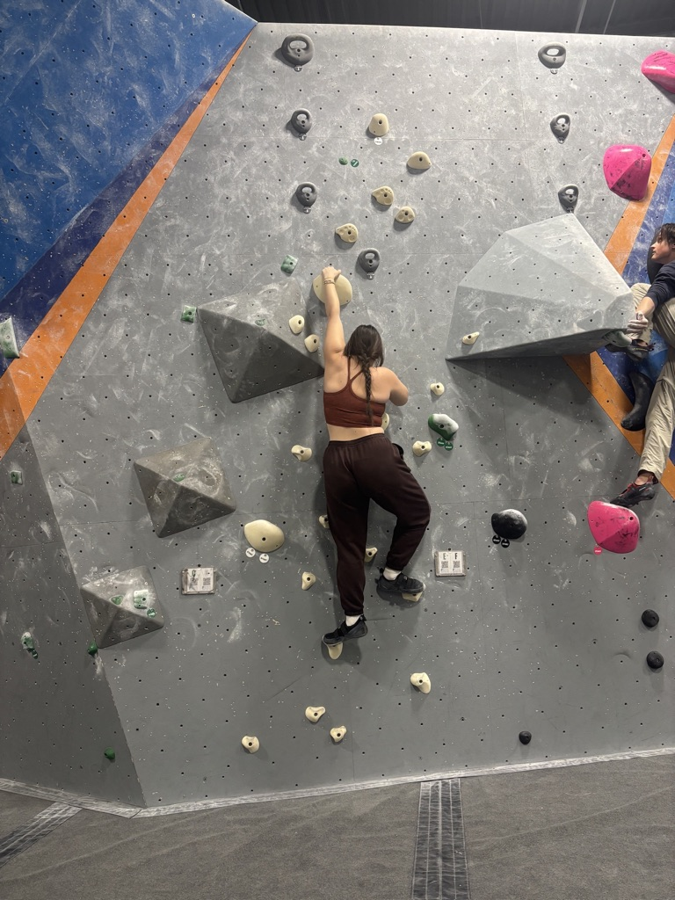
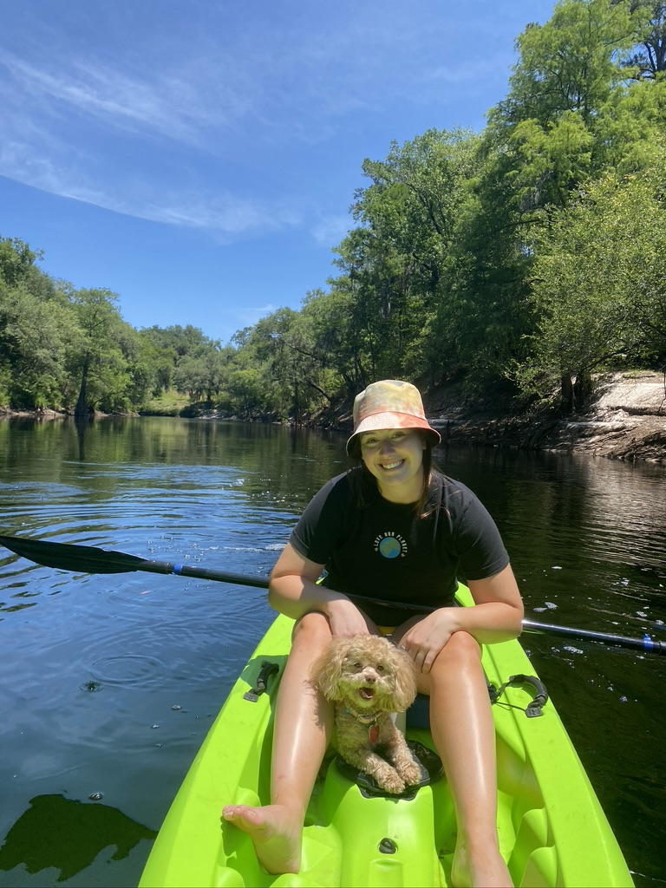
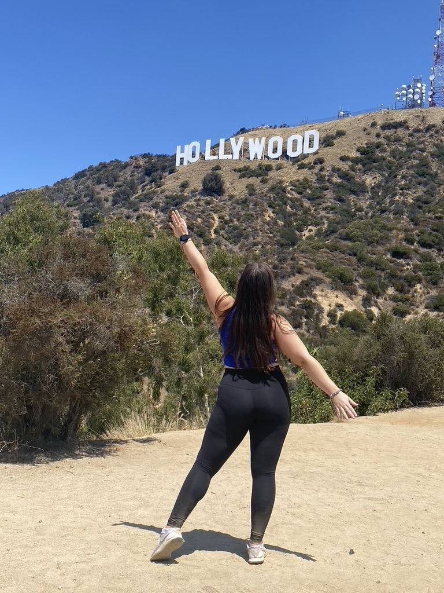

May 2024 — present
Graduate Research Assistant
Rochester Institute of Technology
Investigating waveform systematics in high-mass-ratio black-hole binaries with RIFT and developing AGN-disk population models with McFACTS and BASIL.
Astrophysics · Rochester, NY
I’m a Ph.D. student in astrophysics working on binary black holes, gravitational wave data analysis, and black-hole formation channels.
Research
When black holes merge, they send ripples through spacetime. Those gravitational waves carry clues about where the black holes came from and the environments that shaped them.
My work combines inference, population synthesis, and simulations to turn those clues into a broader picture of black-hole formation.

I use population synthesis to investigate how active galactic nucleus disks and embedded star clusters can form high-mass-ratio binary black holes, and how likely we are to detect them.
Explore McFACTS
I study how differences between waveform models affect the masses, spins, and other properties inferred from unequal-mass binary black-hole mergers.
Explore RIFT
My earlier work explored the origins of supermassive black holes and how their growth connects to galaxy formation and evolution in cosmological simulations.
Read my undergraduate thesis
Experience
My work spans gravitational wave data analysis, computational astrophysics, teaching, and public-facing science communication.
Rochester Institute of Technology
Investigating waveform systematics in high-mass-ratio black-hole binaries with RIFT and developing AGN-disk population models with McFACTS and BASIL.
Rochester Institute of Technology
Supported undergraduate courses in Galactic Astrophysics and University Astronomy through review sessions, grading, and student mentorship.
California Institute of Technology
Used simulated binary-black-hole ringdown signals to investigate tests of general relativity and the role of higher-order quasinormal modes.
University of Florida
Studied the origin and evolution of supermassive black holes with the IllustrisTNG simulation suite and SMUGGLE model.
Beyond the research
I like staying active through rock climbing and yoga, traveling whenever I can, building LEGO sets, and gaming with friends. Ginger, my dog, is also an important part of my life and has strong opinions about work-life balance.




Contact
I’m always happy to connect about gravitational wave astrophysics, research, teaching, or collaborations.
rm9954@rit.edu